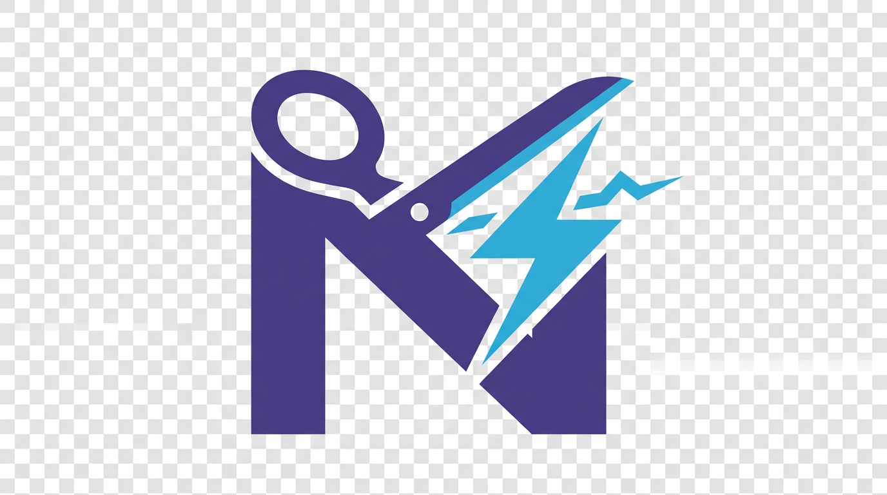
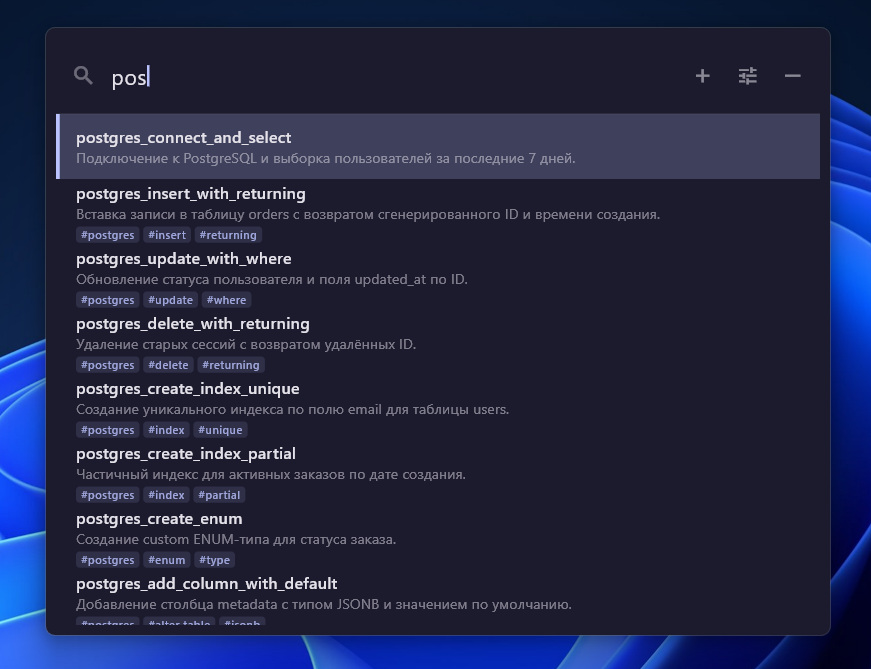
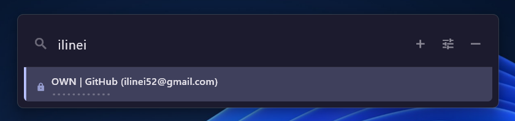
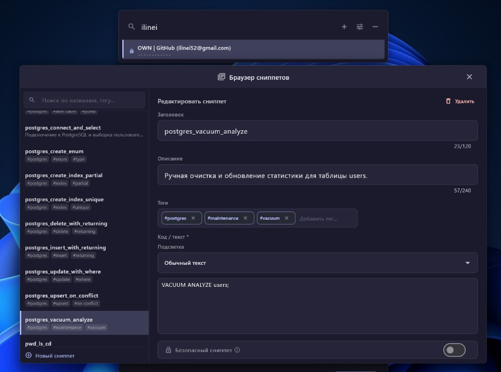

Десктопное приложение для хранения текстовых сниппетов — кода, SQL, шаблонов писем и заметок. Вызовите окно поиска глобальным сочетанием клавиш, найдите нужный фрагмент и вставьте его в любую программу.
nJitSnip снимает рутину копирования из заметок, IDE и мессенджеров: все сниппеты лежат в одном месте, структурированы тегами и описаниями, доступны за пару нажатий клавиш.
Подходит разработчикам, техписателям и всем, кто часто вставляет повторяющиеся тексты. Работает в фоне из системного трея на Windows, Linux и macOS.



Эта страница — публичная витрина сборок. Исходный код приложения распространяется отдельно; здесь только готовые бинарники для установки.